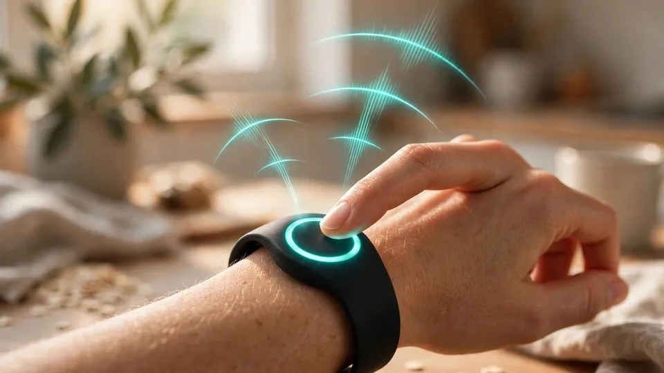
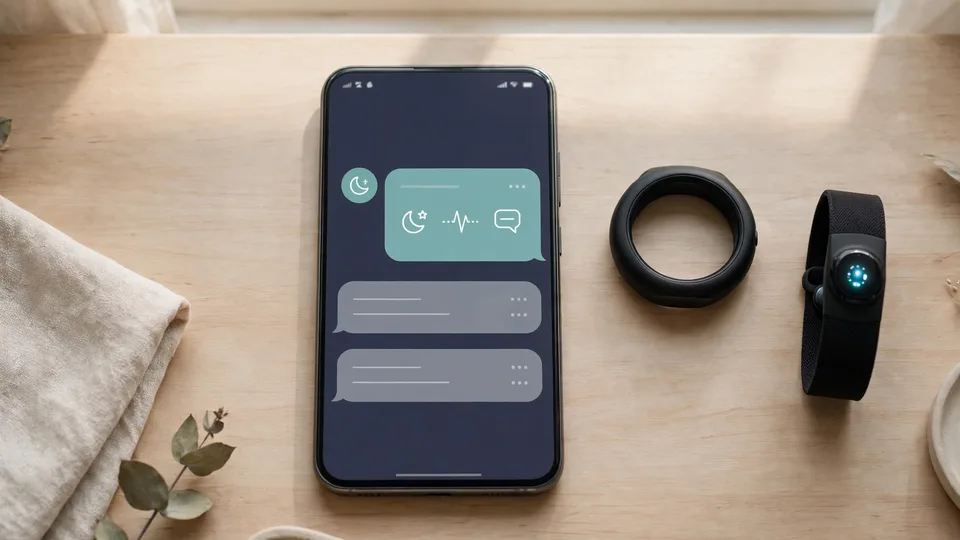

Alloop unveils Trio: a modular wearable built around an AI health agent you can talk to
- Who: Alloop, an "AI-native personal health technology company" founded by CEO Dr. Tony Wu (co-founder Frank Wong)
- What: Trio — a modular 3-in-1 health wearable: one compact sensing core, ring or wristband form, swappable in seconds
- Halo module: extends battery life and lets users speak directly to the AI Health Agent without opening the app
- When: unveiled at the New York City launch event on October 23, 2026; Kickstarter campaign expected November 2026
- Platform: open personal health platform; integrates Apple Health, Google Health, and Health Connect; app works without Trio
- Bio Age: assesses health-related patterns across six domains — sleep, activity, nutrition, cardiovascular, metabolic, musculoskeletal
Alloop today unveiled Trio, a modular 3-in-1 health wearable whose compact sensing core swaps between a ring and a wristband in seconds. But the hardware is arguably the side story: Trio is designed as a direct voice interface to the company's conversational AI Health Agent, which interprets sensor readings together with the messy context of daily life — what you ate, how you slept, how stressed you felt. (PR Newswire)
One core, two form factors
Trio's sensing unit is a single compact core that transfers between a ring and a wristband, so users can switch form factors based on activity or preference without buying two devices or losing continuity in their data. A third module, Halo, attaches to the wristband configuration and adds extra battery capacity, light and vibration notifications, and direct voice interaction with the agent — users tap the wristband and talk, no phone required. (PR Newswire, Geeky Gadgets)
At the launch event, co-founder Frank Wong and designer Carter McGuyer walked through the engineering and ergonomic trade-offs of modular hardware — the problems of traditional wearable form factors and what it takes to make a sensor core you can move between devices without friction. An expert panel including Alloop CEO Dr. Tony Wu, NYU Grossman School of Medicine's Dr. Kendra Ray, and technology journalists Andrea Smith and John Quain discussed where AI fits into interpreting personal health data. (PR Newswire)
An agent, not a dashboard
The pitch that matters is software. Modern wearables are good at collecting data and bad at explaining it — making sense of the numbers usually means opening an app and decoding dashboards. Alloop's agent takes the opposite approach: it pairs continuous physiological measurements with Easy Journal, a feature for logging meals, activities, symptoms, and daily observations by voice, text, or photos, and then lets users explore their health conversationally instead of reading charts. (Geeky Gadgets)

The platform's Bio Age assessment scores health-related patterns across six domains — sleep, activity, nutrition, cardiovascular, metabolic, and musculoskeletal health — and the open platform can pull in data from compatible devices and services through Apple Health, Google Health, and Health Connect. Notably, the Alloop app works without the Trio hardware, so the agent is available to people who already own other wearables. (PR Newswire)
Pre-production — Kickstarter next
The hardware shown in New York is still pre-production, so the final consumer experience may differ. Alloop plans to introduce Trio through a Kickstarter crowdfunding campaign expected in November 2026, with the official launch timed ahead of it. That makes Trio one to watch rather than one to buy: the real test will be how reliably the agent interprets mixed sources of health information, and whether talking to your wrist survives contact with everyday life. (Geeky Gadgets, 1Arabia)

Frequently asked questions
What is Alloop Trio?
Alloop Trio is a modular 3-in-1 health wearable unveiled on October 23, 2026. It uses one compact sensing core that swaps between a ring and a wristband in seconds, plus a Halo module that extends battery life and lets users speak directly to Alloop's AI Health Agent without taking out their phone.
How does Alloop's AI Health Agent work?
The agent combines continuous physiological measurements with everyday context. Users record meals, activities, symptoms, and daily experiences by voice, text, or photos through the Easy Journal feature, and the agent interprets sensor data alongside that context to deliver personalized health insights conversationally. The platform also includes Bio Age, which assesses health-related patterns across six domains: sleep, activity, nutrition, cardiovascular, metabolic, and musculoskeletal health.
Do I need the Trio hardware to use the Alloop platform?
No. Alloop's open personal health platform integrates data from compatible devices and services through Apple Health, Google Health, and Health Connect, and the Alloop app can work without Trio — making the AI Health Agent available to people who already own other health wearables. Trio's Kickstarter campaign is expected in November 2026, and the hardware shown at launch is still pre-production.